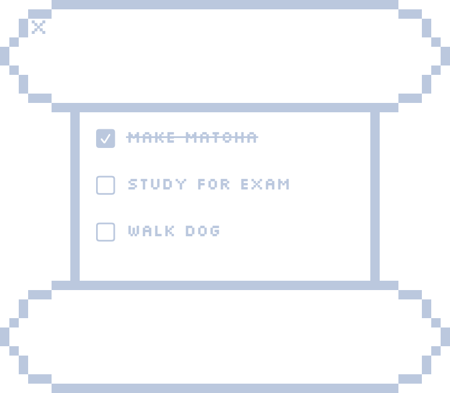

Simple
Type tasks, check them off, and keep going.
Mac-only · local tasks
A simple little to-do list that floats on your Mac.
Download for MacTiny desktop helper
To Do List keeps your tasks in a soft, transparent Mac window with pale blue pixel details and a calm white task area.

Type tasks, check them off, and keep going.
Your tasks stay on your Mac. No account needed.
A tiny pixel-style window made for your desktop.